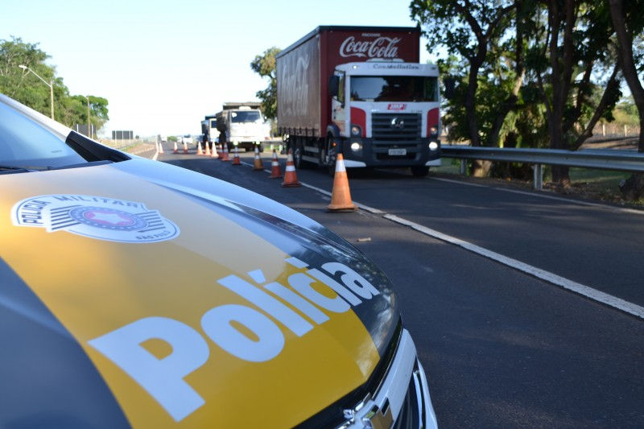

Reduzir mortes globais por acidentes em estradas

A meta 3.6 dos Objetivos de Desenvolvimento Sustentável (ODS) estabelecida pela Organização das Nações Unidas (ONU) até 2020 visava reduzir pela metade as mortes e os ferimentos globais por acidentes em estradas. Embora a data inicial para alcançar essa meta já tenha passado, a importância de abordar a segurança viária permanece urgente, e os esforços continuam para melhorar a situação.
Os acidentes de trânsito representam uma das principais causas de morte e lesões em todo o mundo, afetando não apenas indivíduos, mas também comunidades e economias. Para alcançar a redução desejada, uma abordagem abrangente é necessária, integrando medidas de prevenção, fiscalização, engenharia viária e cuidados pós-acidente.
Prevenção e Educação: Campanhas de conscientização e educação pública desempenham um papel crucial na prevenção de acidentes. Informar sobre práticas seguras de direção, uso de cintos de segurança, capacetes, e os perigos da condução sob efeito de álcool ou drogas são componentes essenciais.
Fiscalização e Aplicação de Leis: A implementação rigorosa de leis de trânsito, incluindo limites de velocidade, restrições de álcool, e o uso obrigatório de equipamentos de segurança, contribui significativamente para a redução de acidentes. A presença visível de aplicação da lei serve como um importante elemento dissuasor.
Melhoria da Infraestrutura Viária: O design seguro das estradas desempenha um papel fundamental na prevenção de acidentes. Isso inclui a construção de rotatórias, sinalizações adequadas, iluminação eficaz e outras medidas de engenharia viária que visam reduzir pontos críticos e melhorar a fluidez do tráfego.
Cuidados Pós-Acidente: Desenvolver sistemas eficazes de resposta a emergências e cuidados médicos pós-acidente é crucial para minimizar as consequências graves dos acidentes. Respostas rápidas e eficientes podem salvar vidas e reduzir as sequelas.
Apesar dos esforços em andamento, os progressos podem variar significativamente entre países e regiões. A continuidade dos investimentos em infraestrutura, educação e aplicação de leis é fundamental. Além disso, a implementação de tecnologias automotivas avançadas, como sistemas de frenagem automática e assistência de direção, também pode contribuir para a melhoria da segurança viária.
Embora a data inicial para a meta 3.6 já tenha passado, os esforços contínuos são essenciais para alcançar progressos significativos na redução de acidentes de trânsito. Este compromisso global visa criar estradas mais seguras e proteger vidas, promovendo assim sociedades mais saudáveis e sustentáveis.